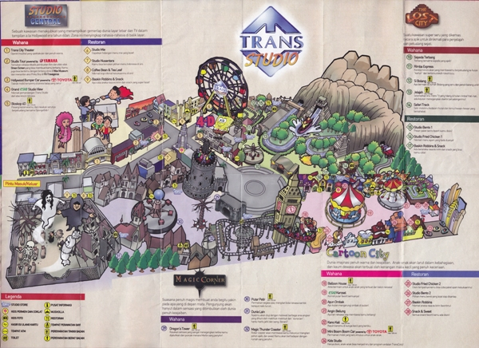
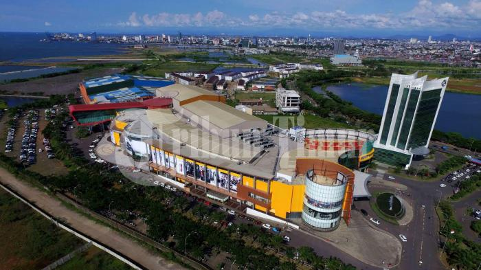
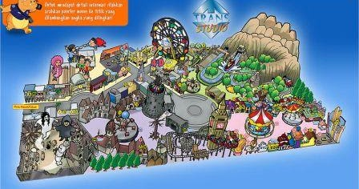

|
Dunia keajaiban yang mampu merubah mimpi menjadi kenyataan, begitulah motto yang dimiliki oleh Trans Studio Makassar. Berbagai wahana yang ada akan membuat Dolaners berada dalam dunia fantasi magic, adventure, holliwood hingga fantasi kartun atau dongeng yang nampak nyata.
Trans Studio Theme Park Makassar atau yang lebih dikenal Trans Studio Makassar adalah taman hiburan terbesar kedua di Indonesia setelah Trans Studio Bandung. Bicara soal tempat wisata modern ini, di Makassar terdapat satu tempat wisata modern yang wajib anda kunjungi. Tempat ini bernama Trans Studio Makassar. 1. Permainan Modern Trans Studio ini merupakan tempat wahana permainan dalam ruangan atau bisa disebut juga indoor theme park dan merupakan tempat bermain indoor terbesar di Indonesia yang dikelola oleh Trans Corps. Tidak hanya wahana permainannya saja di dalam juga terdapat program – program acara yang ada di Trans TV. Trans Studio ini juga terdapat di tiga kota besar lainnya yaitu Makssar, Bandung, dan Semarang. Trans Studio juga memiliki maskot atau logo, hal ini di gunakan sebagai karakter yang mudah diingat khususnya oleh anak – anak jika mengunjungi tempat bermain di dalam ruangan ini. 2. Kawasan Yang Luas Trans Studio Makassar sendiri adalah bagian dari Trans Studio Resort Makassar yang merupakan Kawasan wisata terpadu di Makssar, Indonesia. Tempat wisata terpadu ini memiliki luas kurang lebih 12,7 hektare, dengan investasi mencapai Rp 1 triliun. Proyek ini diresmikan pada 9 september 2009 oleh Bapak Wakil Presiden Indonesia Jusuf Kalla. Untuk dapat sampai ke tempat bermain ini Trans Studio Makassar. Alamat atau address tempat ini di Kawasan Terapadu Trans Studio Makassar, Jalan HM. Dg. Patompo, Tamalate kota Makassar. Jika melalui apilkasi map di handphone bisa menggunakan koordinat 5,159676°LS 119,394243°BT. Lokasinya sangat mudah diakses. Bahkan, kamu bisa bergabung bersama mereka, bertemu orang-orang baru, dan jugamenikmati fasilitas yang ada. Di sini juga tersedia free wifi, lho, sobat Jokka-Jokka. Jika bosan, kamu pun bisa bergeser sedikit ke kafe-kafe di sekitaran Pantai Losari.
3. Cara Menuju Lokasi Dengan berkendara dari kota Makassar untuk menuju Trans Studio Makssar memiliki waktu tempu sekitar 30 menit dengan jauh sekitar 6,1 km. cukup dekat jika anda kebetulan berada di Makassar pastikan untuk mengunjunginya. Dan jika dari bandara Bandara Udara Internasional Sultan Hasanuddin ingin langsung menuju Trans Studio Makssar dibutuhkan waktu sekitar 51 menit dengan jarak sekitar 25.2 km. Tentunya sebagai tempat bermain dalam ruangan terbesar dan dikelola oleh Trans Tv ini memiliki banyak sekali wahana permainan, dari wahana yang ditujukan untuk anak – anak sampai bagi orang dewasa yang ingin memacu adrenalinnya bisa memilih wahana yang terbilang ekstrim.
4. Wahana 4 Zona Wahana dalam Trans Studio World Makassar ini di bagi menjadi 4 zona dan memiliki tema yang berbeda – beda. Gimana? Seru bukan. Zona itu adalah
Tema dari zona adalah Hollywood serta memiliki arsiterktur ala Hollywood tahun 60-an, disini pengunjung akan mersakan sensani bagaimana meyusuri Walk of Flame. Dan wahana di zona ini dikhususkan bagi anak – anak seperti bom-bom car dan ada juga studi yang memutar film dan dapat dinikmati oleh semua umur
Dari nama zonanya ini sudah memberitahukan pengunjung secara tidak langsung bahwa di zona ini pengunjung akan merasakan bagaimana berpetualang menempuh perjalanan, memasuki hutan rimba. Salah satunya wahana Animatronic Dinosaurus.
Wahana dalam zona ini khusus untuk anak berumur dibawah 5 tahun, dengan dekorasi warna – warni serta arsitektur khas dunia kartun zona ini akan membuat betah anak – anak dan tidak ingin berpaling ke zona lain.
Dengan zona dekorasi ala penyihir pengunjung akan merasakan bagaimana nuansa kehidupan dari seorang penyihir itu sendiri, setiap sudutnya memiliki sentuhan magic dan membawa pengunjung masuk ke imajinasinya masing – masing. Dan disini pengunjung akan mendapatkan wahana – wahana yang menarik. Itulah 4 zona yang mungkin jika anda pertama kali mengunjungi Trans Studio Makassar ini tidak merasa kebingungan, tetapi tenang saja karena di setiap sisinya dalam Studio ini tentunya terdapat petunjuk arah dan informasi tentang wahana apa saja yang terdapat di dalam masing – masing dari zona tersebut.
5. Harga Tiket Masuk Untuk tiket masuknya sendiri berbeda jika di hari biasa, Senin sampai Jum’at dikenakan biaya uang 100 ribu rupiah dan jika di weekend, Sabtu dan Minggu dikenakan biaya 150 ribu rupiah per orangnya dan tentunya harga ini dapat berubah sewaktu – waktu sesuai dengan prosedur dari pengelola. Wisata hitz Makassar ini juga sering mengadakan event dan promo ketika pada bulan-bulan tertentu seperti April, Juni, Agustus, Oktober dan Desember maupun tiap bulannya, seperti buy 1 get 1 |
 |